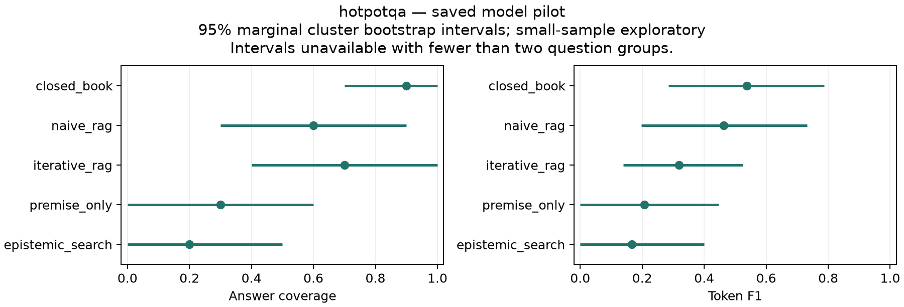

Technical report · October 2026 · Implementation and exploratory evaluation
We implement retrieval control over an explicit premise graph, a provenance-backed evidence ledger and separate supported, contradicted, mixed and unknown states. A conservative reasoner identifies unresolved obligations; a bounded controller retrieves more evidence, attempts conflict resolution, answers or abstains. We compare the system with closed-book, fixed-retrieval, iterative-retrieval and premise-only baselines using the same model, reasoning setting, retriever and resource ceilings. On small saved HotpotQA and 2WikiMultiHopQA pilots, the full system does not establish an adjusted advantage over naive RAG and exhibits low answer coverage. ConfRAG diagnostics expose a missed conflict and extraction failures. These observations support a reproducible engineering artifact and a negative pilot report, not a claim of improved reliability, calibrated uncertainty or architectural novelty. All result tables are generated from saved scores; failed cases remain visible. Wider evaluation is deferred until semantic extraction and the experimental design have independent validation.
Relevance alone does not establish that the evidence needed for an answer has been acquired. We investigate an explicit representation of that gap: which premise remains unresolved, what evidence bears on it, and whether the next retrieval is worth its cost. The intended benefit is a better reliability and resource tradeoff. The present experiment does not establish that benefit.
The delivered contributions are an instrumented implementation with mockable provider boundaries, matched baseline execution, transparent failure records and an offline reproduction package. We distinguish implemented capabilities from empirically validated claims. The local trace dashboard supports inspection; it is not the scientific contribution. The original proposal remains a record of hypotheses, rather than a description of demonstrated results.
Active and adaptive retrieval are established: FLARE uses predicted continuation content to drive retrieval; Self-RAG learns retrieval/reflection behavior; Adaptive-RAG selects retrieval strategies using question complexity. Our simple iterative baseline is an internal control, not a faithful reproduction of these systems.
The closest conceptual neighbors are S2G-RAG, which uses explicit sufficiency/gap judgments and compact evidence, and Socrates-RAG, which selects unresolved premises to discriminate competing answers under a finite search budget. Neither gap retrieval nor premise-directed inquiry is introduced by this project.
Abstention-Aware Scientific Reasoning combines condition decomposition, evidence auditing and selective decisions. Semantic Entropy measures uncertainty over meanings; our heuristic evidence scores are not that estimator and are not calibrated probabilities. Logic-LM and LINC already combine semantic translation with symbolic inference.
Information-value ideas also overlap: InfoGain-RAG ranks and filters documents using information gain; ECR proposes claim acquisition through expected entropy reduction; and DeepControl controls evidence acquisition and granularity through information utility. The non-peer-reviewed Evidence-Obligation PGR preprint also describes an obligation ledger and warrant gate. These overlaps narrow our position to an implementation and evaluation snapshot. The targeted primary-source audit is documented in the literature map; it is not an exhaustive full-text review or evidence that the combined architecture is novel.
The state contains a validated directed acyclic premise graph, evidence items, claim beliefs, a derivation/blocker trace and cumulative resource use. Structured model outputs must pass schemas. Extracted spans must occur in their cited source; source IDs, queries and evidence identifiers remain attached to the record. Duplicate evidence is compacted without discarding provenance.
Support and contradiction are tracked separately. Missing evidence stays
UNKNOWN; competing evidence can remain MIXED. Aggregation is heuristic and
may mishandle source dependence or stance. Graph propagation supports conjunction,
disjunction and negation, exposing minimal unresolved frontiers. A sufficient
conclusion means derivability within the extracted model; an incomplete or wrong
extraction can still produce a wrong real-world answer.
The default controller prioritizes unresolved claims by importance, with explicit conflict-directed acquisition and hard resource checks. A later optional policy ranks targets using importance, uncertainty, frontier participation and declared retrievability/cost estimates. That score is neither calibrated expected utility nor an optimal policy. The real pilot used the earlier importance policy, not the later VOI implementation. An optional Boolean SMT backend applies only to explicit structured inputs. It is not the backend used in the open-domain pilot; its classical semantics can differ from conservative graph propagation.
The answer generator receives compact evidence after the control decision. When required information remains unresolved or acquisition is unavailable, the system can abstain and expose blockers. The broader design includes asking for user information, but this pilot does not evaluate an interactive clarification policy.
The primary model is gpt-6-luna with
medium reasoning throughout
all compared methods. The Responses API adapter records usage and latency and
validates structured responses. Model aliases are recorded identifiers, not
immutable weight snapshots. No Astra run or Sol robustness result is included.
The main populations are 10 HotpotQA questions, 10 2WikiMultiHopQA questions and 2 ConfRAG questions. Seeded selection precedes outcome inspection. Earlier tiny smokes overlap the comparison subsets and are not independent replication. Dataset revisions, per-question retrieval scope and grader versions appear in the generated population table and dataset acquisition instructions.
Every method receives the same per-case ceilings and lexical retriever over the provided question-specific document pool. For the HotpotQA configuration, these include 3 search calls, 24 model calls, 100000 input tokens and 32768 output tokens. These are matched upper bounds, not matched realized work. Full resolved dataset-specific settings are retained in the generated statistics. Retrieval uses provided contexts, not open-web search or a production ranker.
The five methods are closed-book, naive top-k RAG, relevance-oriented iterative RAG, premise-directed retrieval without belief/formal control, and full Epistemic Search. All use the same answer grader. Gold annotations remain evaluator-only. Errors and unanswered labelled examples score zero for answer metrics; coverage uses all planned cases. Selective EM risk conditions on answered labelled cases and does not assess whether an abstention was justified. ConfRAG has no single canonical-answer EM/F1 in our protocol. Its native structured evaluation is not reproduced. See the ConfRAG paper.
Inference reuses the saved outputs: question-cluster percentile bootstrap intervals, paired sign-flip tests and Holm correction across available method/ metric comparisons within each dataset report. Intervals are marginal, not simultaneous, and can be unstable or degenerate at these sample sizes. The analysis is exploratory; it supplies no new independent model generations.
hotpotqa — saved model pilot. NA means unavailable; errors and abstentions retained. No pooled dataset score.
| method | n | EM | F1 | coverage | selective_EM_risk | errors | budget_stops |
|---|---|---|---|---|---|---|---|
| closed_book | 10 | 0.3 | 0.536692 | 0.9 | 0.666667 | 1 | 0 |
| naive_rag | 10 | 0.3 | 0.462432 | 0.6 | 0.5 | 0 | 0 |
| iterative_rag | 10 | 0.1 | 0.318712 | 0.7 | 0.857143 | 0 | 3 |
| premise_only | 10 | 0.1 | 0.207273 | 0.3 | 0.666667 | 0 | 0 |
| epistemic_search | 10 | 0.1 | 0.166667 | 0.2 | 0.5 | 2 | 0 |

2wikimultihopqa — saved model pilot. NA means unavailable; errors and abstentions retained. No pooled dataset score.
| method | n | EM | F1 | coverage | selective_EM_risk | errors | budget_stops |
|---|---|---|---|---|---|---|---|
| closed_book | 10 | 0.5 | 0.774742 | 1 | 0.5 | 0 | 0 |
| naive_rag | 10 | 0 | 0 | 0 | NA | 0 | 0 |
| iterative_rag | 10 | 0 | 0.225861 | 0.7 | 1 | 0 | 3 |
| premise_only | 10 | 0 | 0 | 0 | NA | 0 | 0 |
| epistemic_search | 10 | 0 | 0.06 | 0.1 | 1 | 1 | 0 |
The full method does not establish a Holm-adjusted advantage over naive RAG on these pilots. Its HotpotQA coverage and F1 are lower in the observed sample; 2Wiki results are also weak. Closed-book is strongest on the observed 2Wiki sample, which cautions against attributing performance to retrieval architecture alone. The adjusted closed-book comparison in that dataset is an exploratory observation, not evidence of general closed-book superiority. All paired differences, intervals, raw and adjusted p-values remain available for HotpotQA and 2Wiki. Bootstrap intervals and discrete paired tests can disagree on small samples; neither result is selectively hidden.
confrag — saved model pilot. NA means unavailable; errors and abstentions retained. No pooled dataset score.
| method | n | EM | F1 | coverage | selective_EM_risk | errors | budget_stops |
|---|---|---|---|---|---|---|---|
| closed_book | 2 | NA | NA | 1 | NA | 0 | 0 |
| naive_rag | 2 | NA | NA | 0.5 | NA | 0 | 0 |
| iterative_rag | 2 | NA | NA | 0.5 | NA | 0 | 1 |
| premise_only | 2 | NA | NA | 0.5 | NA | 0 | 0 |
| epistemic_search | 2 | NA | NA | 0.5 | NA | 1 | 0 |
The saved full-system conflict diagnostic records 1 false negative and 1 unknown detector output. Retrieved context did not expose both opposing source clusters in the missed case. That identifies a pipeline limitation, without isolating whether acquisition or downstream interpretation is the primary cause. There is no independent safety adjudication; the unsafe-answer rate remains unavailable. Low coverage alone cannot establish safe abstention.
Across the main saved pilot, the failure inventory contains 110 method-cases: 14 reference matches, 31 answer mismatches, 5 execution errors, 47 abstentions, 7 budget stops and 6 ungraded answers. Automatic categories locate observable stages or output symptoms, not verified root causes. 36 hypotheses need review; there are 0 manual judgments. Examples are selected by a seeded hash within each observed outcome, not by choosing attractive successes. Full populations and selection decisions remain in the inventory.
The cumulative recorded project API estimate is $0.067952575, including the smokes. The ledger records 278 physical generation calls, 556 HTTP API calls including input-count preflights, and 177 local output reuses. Exact reusable outputs incur logical tokens/calls but no new physical API charge. Reported physical spend and latency therefore cannot be treated as uncached method-efficiency measurements. Costs use recorded configured rates and observed usage, not a provider invoice or a claim about current pricing.
Per-method input/output/reasoning/cache tokens, model/search/API calls, context/ retrieved tokens, latency and known/unknown cost distributions are available for HotpotQA, 2Wiki and ConfRAG. No Pareto improvement is established. The project cap is $50 total, with $5 inside that cap reserved for a later stronger-model subset. This report spends none of that reserve.
Calibration measurement and fitting exist and are checked on synthetic fixtures. Aligned real confidence/outcome data are absent, so there is no real Brier/ECE claim and no valid full risk-coverage curve or AURC for this pilot. Semantic entropy was not measured. The absence of those measurements is not filled with heuristic probabilities or interpolated answers for abstained cases.
ablation-fixture — SCRIPTED FIXTURE (not model quality); named switch disabled. NA means unavailable; errors and abstentions retained. No pooled dataset score.
| method | n | EM | F1 | coverage | selective_EM_risk | errors | budget_stops |
|---|---|---|---|---|---|---|---|
| reference | 1 | 1 | 1 | 1 | 0 | 0 | 0 |
| use_premise_graph | 1 | 1 | 1 | 1 | 0 | 0 | 0 |
| use_belief_state | 1 | 1 | 1 | 1 | 0 | 0 | 0 |
| use_formal_sufficiency | 1 | 1 | 1 | 1 | 0 | 0 | 0 |
| use_conflict_resolution | 1 | 1 | 1 | 1 | 0 | 0 | 0 |
| use_cost_aware_controller | 1 | 1 | 1 | 1 | 0 | 0 | 0 |
| allow_abstention | 1 | 1 | 1 | 1 | 0 | 0 | 0 |
| compact_evidence | 1 | 1 | 1 | 1 | 0 | 0 | 0 |
These are scripted implementation checks on a tiny fixture. They cannot identify causal quality effects; some switches are inactive on that case. Removing premise graph or belief prerequisites also removes dependent control, explicitly recorded in intervention metadata. The fixture's raw context can be shorter than its compact evidence representation; compaction is not assumed to save tokens universally. Controlled transformations and generative/graph/SMT comparisons are also fixture-validated capabilities, not evidence of improved real-model robustness. A generic-query versus targeted- query real ablation remains untested.
Premise extraction can omit or misstate answer-critical conditions. Exact-span validation catches some extraction errors but does not establish correct stance. Source credibility, freshness and dependence remain unresolved modeling problems; multiple matching sources need not be independent evidence. A corpus can omit a necessary fact, and a valid graph cannot establish open-world completeness. Classical SMT and conservative four-state propagation answer different questions; formalization brittleness remains upstream of any exact derivation.
The small selected samples, one primary model, reuse across nested smokes, provided contexts and cache-dependent timing limit generalization. Benchmarks contain annotation and alias imperfections; reference matching is not a complete test of reasoning or factual truth. No independent answerability/safety judgments support a reliability claim, and no real ablation or stronger-model experiment isolates the source of the weak results. Future repairs must use a separate development split rather than optimize on these inspected evaluation cases.
The system is a research artifact, not legal or medical advice. Provenance is preserved, uncertainty is not fabricated, and abstention is an epistemic decision rather than a content-policy refusal. Source-authority bias and exclusion of minority evidence require scrutiny. Raw traces contain benchmark excerpts; their upstream attribution and licensing conditions still apply. The archive remains local; no paper, repository or dataset was publicly submitted by this workflow.
The package contains code, locked dependencies, configs/seeds, prompt construction, model metadata, input hashes and complete saved run manifests/traces. A fresh checkout executes fixture checks without an API key. A separate extracted archive reproduces the saved numerical tables and statistical comparisons exactly. Details and commands are in REPRODUCING.md. This report is rendered from a prose template and checked result inclusions; its source/output hashes are recorded alongside it. Numbers are never manually transcribed into result tables.
The appropriate next study is independent semantic review and a preregistered, small development-only intervention addressing the observed extraction/acquisition failure modes. An informative matched pilot should precede any scaling. Only stable findings would justify the reserved Sol subset, with the same settings across methods and a reported cost estimate before a run above the project threshold. No additional implementation phase or paid benchmark is automatically scheduled here.
This report documents a completed implementation roadmap with unresolved research hypotheses. It is suitable for technical inspection and a candid research portfolio; a submission claiming algorithmic novelty or benchmark superiority would require substantially stronger independent evidence.